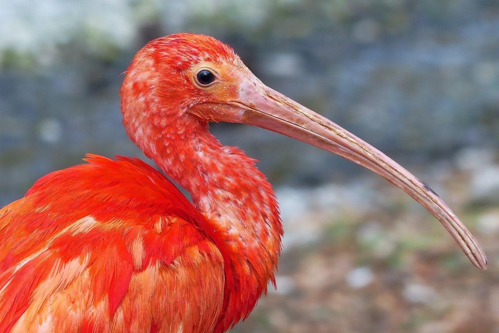

홍학을 닮은 새
홍학 (紅鶴) 또는 플라밍고 (flamingo)는 홍학목 새들의 총칭이다. 모두 홍학과에 속한다. 키는 대부분 90-150cm, 날개길이는 37-44cm, 꼬리는 15cm 정도이다.
restructure (reactive)
Pinterest에 오신 것을
환영합니다
홍학 (紅鶴) 또는 플라밍고 (flamingo)는 홍학목 새들의 총칭이다. 모두 홍학과에 속한다. 키는 대부분 90-150cm, 날개길이는 37-44cm, 꼬리는 15cm 정도이다.

방수 방진 등급이 들어가 있기 때문에 무난하게 물에 걱정 없이 사용은 가능하지만 등급이라는 게 있으니 너무 깊은 물에서 사용하면 안 됩니다.
쌍떡잎식물 장미목 장미과 낙엽교목 식물인 사과나무의 열매. 빈파(瀕婆)·평과(苹果)라고도 한다. 이과(梨果)에 속하며, 지름 5~10cm정도의 둥근 모양으로 빛깔은 보통 붉거나 노랗다.

물감? 오로라? 풍경? 과연..
초록색에 가려져 있던 다른 색소들이 나뭇잎에 보이기 시작하는데, 이럴 때 나뭇잎에 남아있는 색소 성분의 색깔에 따라서 붉은색, 노란색, 갈색으로 나타나게 됩니다.

사전적 의미는 나루터에서 사람이나 짐 등을 건네주는 배. 일반적으로는 소형 목재 평저선을 뜻한다. 주요 동력원은 인력이다.
18세기 말에 아시아의 각 원종이 유럽에 도입되고 이들 유럽과 아시아 원종간의 교배가 이루어져 화색이나 화형은 물론 사계성이나 개화성 등 생태적으로 변화가 많은 품종들이 만들어졌다.

바위가 깎아세운 것처럼 아주 높이 솟아 있는 험한 낭떠러지. 절벽이나 큰 바위의 면에 글이나 그림, 조각상을 새기는 것을 마애(磨崖)라고 부른다. '마애불' 등 단어도 여기에서 나온 것이다.
어떻게 전부 빨갛게 지었을까?

조심하세요! 길을 잃지 않도록..
홍학 (紅鶴) 또는 플라밍고 (flamingo)는 홍학목 새들의 총칭이다. 모두 홍학과에 속한다. 키는 대부분 90-150cm, 날개길이는 37-44cm, 꼬리는 15cm 정도이다.

일반적인 끈 매는 방법에서 끈 고리를 한 번 더 교차시켜 줍니다. 양쪽으로 고리를 잘 빼내 줍니다. 매듭을 잘 정리하여 단단하게 묶어줍니다.
쌍떡잎식물 장미목 장미과 낙엽교목 식물인 사과나무의 열매. 빈파(瀕婆)·평과(苹果)라고도 한다. 이과(梨果)에 속하며, 지름 5~10cm정도의 둥근 모양으로 빛깔은 보통 붉거나 노랗다.

이때는 위기 속에 점점 규모의 경제가 대두되었고, 1990년대 말 자동차 회사간에 인수합병의 바람이 거세게 불었다.
초록색에 가려져 있던 다른 색소들이 나뭇잎에 보이기 시작하는데, 이럴 때 나뭇잎에 남아있는 색소 성분의 색깔에 따라서 붉은색, 노란색, 갈색으로 나타나게 됩니다.

위의 파란색 벽돌 벽 예술 배경 배경 일러스트 다운로드하여 배경 화면 포스터 및 배너 디자인으로 사용하십시오. 관련 권장 사항을 클릭하면 더 많은 배경 이미지 볼 수 있습니다.
18세기 말에 아시아의 각 원종이 유럽에 도입되고 이들 유럽과 아시아 원종간의 교배가 이루어져 화색이나 화형은 물론 사계성이나 개화성 등 생태적으로 변화가 많은 품종들이 만들어졌다.

시원한 파도가 늘리는 소리는 마치 자연 그 자체가 나를 안심시키는 것 같다. 푸르게 펼쳐진 바다는 끝이 보이지 않을 만큼 넓게 펼쳐져 있다.
어떻게 전부 빨갛게 지었을까?

각종 스포츠를 즐길 날씨인가?
홍학 (紅鶴) 또는 플라밍고 (flamingo)는 홍학목 새들의 총칭이다. 모두 홍학과에 속한다. 키는 대부분 90-150cm, 날개길이는 37-44cm, 꼬리는 15cm 정도이다.

기계식 키보드의 꽃, 커스텀 키보드는 자신에게 맞는 키보드를 직접 제작/조립하는 것을 말한다. 이런 것도 만들어줄까?
쌍떡잎식물 장미목 장미과 낙엽교목 식물인 사과나무의 열매. 빈파(瀕婆)·평과(苹果)라고도 한다. 이과(梨果)에 속하며, 지름 5~10cm정도의 둥근 모양으로 빛깔은 보통 붉거나 노랗다.

게임에서 나올 법 하다.
초록색에 가려져 있던 다른 색소들이 나뭇잎에 보이기 시작하는데, 이럴 때 나뭇잎에 남아있는 색소 성분의 색깔에 따라서 붉은색, 노란색, 갈색으로 나타나게 됩니다.

보물선인가 해양 박물관인가, 그리고 역사는 그 사실을 망각했다.
18세기 말에 아시아의 각 원종이 유럽에 도입되고 이들 유럽과 아시아 원종간의 교배가 이루어져 화색이나 화형은 물론 사계성이나 개화성 등 생태적으로 변화가 많은 품종들이 만들어졌다.

완벽한 화려한 조명 사진을 다운로드하세요. 100개가 넘는 최고의 무료 화려한 조명 이미지를 찾아 보세요.
어떻게 전부 빨갛게 지었을까?

차분한 색감과 함께 기분 좋은 휴식
홍학 (紅鶴) 또는 플라밍고 (flamingo)는 홍학목 새들의 총칭이다. 모두 홍학과에 속한다. 키는 대부분 90-150cm, 날개길이는 37-44cm, 꼬리는 15cm 정도이다.

현대적 과학의 논리와 방법은 16~17세기에 갈릴레이와 베이컨, 그리고 뉴턴에 의해 기초가 확립되었다.
쌍떡잎식물 장미목 장미과 낙엽교목 식물인 사과나무의 열매. 빈파(瀕婆)·평과(苹果)라고도 한다. 이과(梨果)에 속하며, 지름 5~10cm정도의 둥근 모양으로 빛깔은 보통 붉거나 노랗다.

강이나 좁은 바다물목에서, 배가 닿고 떠나고 하는 일정한 시설. 강구(江口). 도구(渡口). 도두(渡頭). 도진(渡津). 진도(津渡). 진두(津頭)라고도 한다.
초록색에 가려져 있던 다른 색소들이 나뭇잎에 보이기 시작하는데, 이럴 때 나뭇잎에 남아있는 색소 성분의 색깔에 따라서 붉은색, 노란색, 갈색으로 나타나게 됩니다.

놀이공원 G마켓 · 신세계적 혜택을 한번에! 놀이공원 전회원 10% 쿠폰 지급! 스마일배송 첫구매 시 15% 할인까지!
18세기 말에 아시아의 각 원종이 유럽에 도입되고 이들 유럽과 아시아 원종간의 교배가 이루어져 화색이나 화형은 물론 사계성이나 개화성 등 생태적으로 변화가 많은 품종들이 만들어졌다.

이것은 무엇일까요?
어떻게 전부 빨갛게 지었을까?

무인도 (無人島)는 사람이 살지 않는 섬이다. 비유적으로는 섬이 아니어도, 외부로부터 격리된 어떤 상황을 가리켜서 무인도라고 하는 경우도 많다.